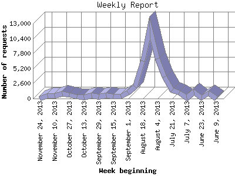

The Weekly Report identifies the activity for each week within the report
time frame. Remember that one page hit can result in several server requests
as the images for each page are loaded.
Note: Depending on the
report time frame for this report the first and last week may not represent
a full seven day week, resulting in lower hits.

| Week beginning | Number of requests | Number of page requests | |
|---|---|---|---|
| 1. | June 9, 2013 | 40 | 22 |
| 2. | June 16, 2013 | 929 | 209 |
| 3. | June 23, 2013 | 135 | 38 |
| 4. | June 30, 2013 | 1,154 | 145 |
| 5. | July 7, 2013 | 100 | 40 |
| 6. | July 14, 2013 | 988 | 197 |
| 7. | July 21, 2013 | 1,391 | 83 |
| 8. | July 28, 2013 | 3,769 | 130 |
| 9. | August 4, 2013 | 6,935 | 171 |
| 10. | August 11, 2013 | 12,327 | 406 |
| 11. | August 18, 2013 | 6,464 | 275 |
| 12. | August 25, 2013 | 2,001 | 99 |
| 13. | September 1, 2013 | 1,021 | 67 |
| 14. | September 8, 2013 | 395 | 46 |
| 15. | September 15, 2013 | 360 | 56 |
| 16. | September 22, 2013 | 510 | 50 |
| 17. | September 29, 2013 | 323 | 42 |
| 18. | October 6, 2013 | 466 | 63 |
| 19. | October 13, 2013 | 238 | 52 |
| 20. | October 20, 2013 | 342 | 54 |
| 21. | October 27, 2013 | 615 | 88 |
| 22. | November 3, 2013 | 852 | 118 |
| 23. | November 10, 2013 | 507 | 85 |
| 24. | November 17, 2013 | 517 | 60 |
| 25. | November 24, 2013 | 45 | 10 |
Most active week beginning August 11, 2013 : 406 pages sent. 12,327 requests handled.
Weekly average: 104 pages sent. 1,696 requests handled.
This report was generated on November 26, 2013 04:33.
Report time frame June 15, 2013 22:34 to November 25, 2013 19:34.
| Web statistics report produced by: analog 5.1 / Report Magic 2.21 |